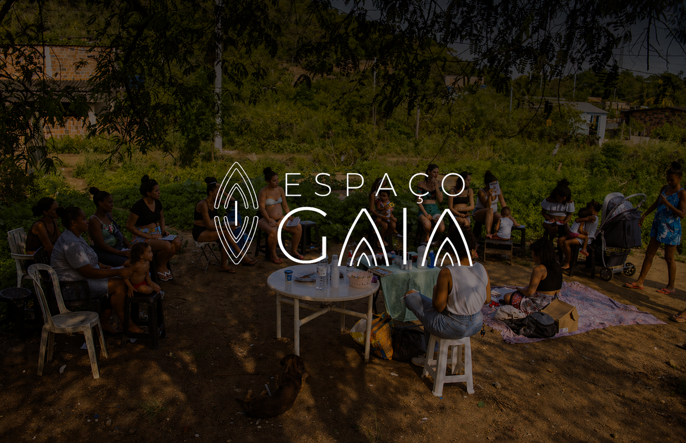

Espaço Gaia
Organização pela Justiça Climática e de Gênero
Nossa Missão
Promover a emancipação e o protagonismo de mulheres impactadas pelo racismo ambiental e pelas múltiplas formas de negligência estatal, a partir de uma abordagem interseccional que integra os eixos de justiça climática, de gênero, racial e econômica. O Espaço Gaia atua no fortalecimento de saberes, afetos e ações concretas que assegurem dignidade, autonomia e participação ativa das mulheres na defesa de seus corpos, territórios e direitos.
Nossa Visão
Ser referência na promoção da justiça climática e de gênero no Leste Fluminense através de práticas sustentáveis e formação de lideranças femininas em todo o estado do Rio de Janeiro, transformando territórios vulneráveis em espaços de inovação social e ambiental. O Espaço Gaia busca um futuro em que mulheres, especialmente negras e periféricas, sejam reconhecidas como protagonistas das transformações sociais e ambientais, com pleno acesso à justiça, autonomia econômica e respeito às suas escolhas.
Nossos Valores
Justiça e reparação · Protagonismo feminino · Cuidado · solidariedade · Ancestralidade · saberes populares · Sustentabilidade · equilíbrio · Autonomia · emancipação